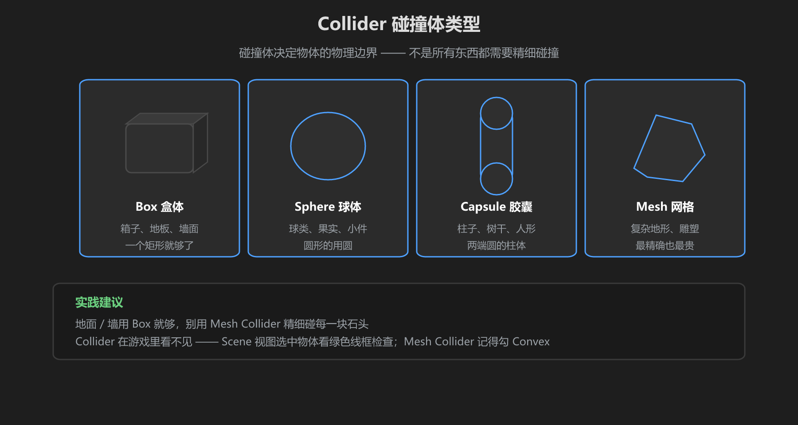
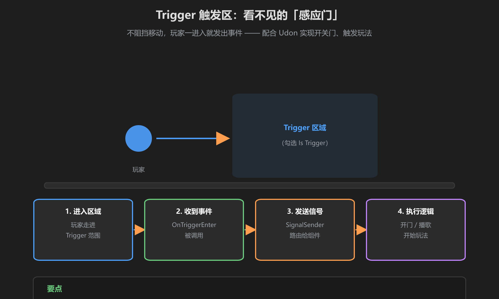

第 2 篇：地面与碰撞 — 让世界「站得住」
场景里所有物体都要有 Collider（碰撞体），玩家才能站上去、撞上去、碰不到该碰不到的东西。本篇讲碰撞体选型、Layer 碰撞层和 Trigger 触发区。
1. Collider 类型：选对形状

图：Box / Sphere / Capsule / Mesh，按形状选型
| 类型 | 适合 | 说明 |
|---|---|---|
| Box | 地面、墙、箱子 | 最常用，性能最好 |
| Sphere | 球、果实、小圆件 | 圆的用球，省性能 |
| Capsule | 柱子、树干 | 两头圆的柱体，玩家角色也用它 |
| Mesh | 复杂地形、雕塑 | 最精确也最贵，慎用 |
别用 Mesh Collider 碰每一块石头。地形起伏用多个 Box 拼出来，视觉用模型，碰撞用简化形状 —— 玩家根本分不出区别，但性能差很多。Mesh Collider 若要用，记得勾 Convex。
2. Layer 与碰撞矩阵
Unity 用 Layer（层）管理「谁和谁相撞」。选中物体 → Inspector 顶部 Layer 下拉框设置层，然后 Edit → Project Settings → Physics → Layer Collision Matrix 勾选哪些层互相碰撞。
- 勾掉的层之间互不碰撞：玩家能穿过某些装饰、粒子不触发碰撞
- 矩阵是全局设置，改一次全场景生效 —— 别为单个物体去改全局
3. Trigger 触发区：配合 Udon 使用

图：玩家进入区域 → 收到事件 → 发信号 → 执行逻辑
给 Collider 勾上 Is Trigger，它就不再阻挡移动，只在物体进出时发事件。UdonSharp 里这样接收：
public class DoorTriggerComponent : UdonSharpBehaviour
{
void OnTriggerEnter(Collider other)
{
// 谁进来了、进来做什么 —— 走信号架构路由给功能组件
Debug.Log("有玩家进入了触发区");
}
}结合你项目的信号架构：Trigger（触发层）只负责在OnTriggerEnter里调SignalSender.Execute()，业务逻辑全部放在 Component 层 —— 见《游戏机制教程》的架构篇。
4. 地面高度与玩家站立判断
- 地面必须平、连续：两块地面接缝处的高度差会变成「隐形台阶」或空气墙
- 站立判定靠 Collider：玩家能站住 = 脚下有 Collider；掉出世界 = 地面没有 Collider（最常见的翻车点）
- 安全网：世界边界外放一个隐形大 Box（或让 Udon 检测掉落后传送回 Spawn），防止玩家坠入虚空
5. VRChat 层的特别说明
VRChat SDK 要求某些碰撞设置在特定层上：
| 层 | 用途 | 注意 |
|---|---|---|
| Default | 普通场景物体 | 大部分世界物体用它 |
| PlayerLocal / PlayerNetwork | 玩家角色 | SDK 自动设置，别手动改 |
| MirrorReflection / PostProcessing | 特殊渲染 | 别把场景物体放进去 |
VRChat 玩家移动是本地计算：碰撞同步是「每端各自判断」。所以碰撞体尺寸、位置必须在所有客户端一致 —— 引用/实例化的物体尤其注意，别在代码里按玩家改碰撞体。
学前检查清单
- 能给不同物体选对 Collider 类型
- 理解 Layer + 碰撞矩阵怎么控制碰撞
- 能做出一个配合 Udon 的 Trigger 触发区
- 确认地面有 Collider、世界外有防掉落措施